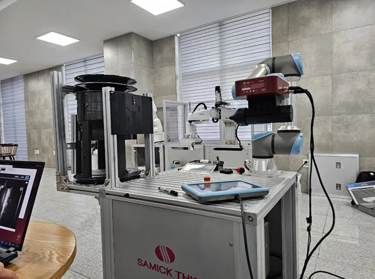
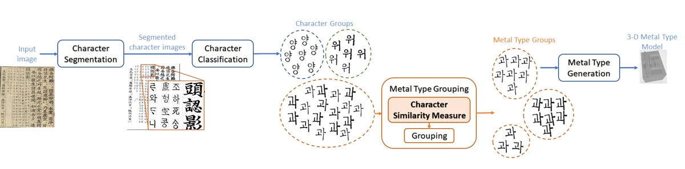

About
I'm a machine learning engineer and researcher working on computer vision, 3D perception and robotics. Right now I'm at Hamad Bin Khalifa University in Doha, building models that read social interaction between children from video, using pose, gaze and tracking.
Before that I built industrial vision in Seoul, where my pipeline guided a robot arm to fasten bolts with pose accuracy within 1 mm, and earlier shipped video analytics on edge hardware in Karachi. I hold an M.S. in computer vision from KOREATECH in South Korea.
The thread through all of it is the same question: does the model still work when it leaves the room it was trained in?
Experience
-
Sep 2025 to now
Graduate Research Assistant
Hamad Bin Khalifa University (A-Sense), DohaBuilt STIN, a temporal network that combines body pose, gaze and interpersonal distance to classify social engagement between two people in video. Also built the pipeline under it and am now working on synthetic data for child interaction video.
-
Feb 2025 to Jul 2025
Machine Learning Researcher
4DiVISION, SeoulBuilt the vision pipeline for an automated robotic bolt fastening cell, and automated switch-position inspection on the company's Tesseravue product, designed to cut manual QA time by about 70%.
-
Mar 2023 to Feb 2025
Graduate Research Assistant
KOREATECH, Computer Vision and Video Processing Lab, CheonanMaster's research on image-to-image translation for historical documents, pose estimation for a mobile manipulator, and a National Museum of Korea funded study of Joseon-era metal type.
-
Jan 2022 to Mar 2023
AI Project Manager
Bleed AI, remoteLed a team of five across more than 10 client computer vision projects and built models hands-on, including real-time action recognition for Veeve smart shopping carts on Google Coral Edge TPUs.
-
Aug 2021 to Feb 2022
Machine Learning Engineer
Liquid Technologies, KarachiCore developer of Vidan.ai, a real-time video analytics platform. Designed its architecture and built the licence plate recognition and train monitoring modules for single-board computers.
-
Jan 2020 to Aug 2021
Embedded Systems Engineer
Sudoware, KarachiBuilt wireless sensor networks for hydroponic farms and IoT applications for industrial clients.
Projects
-
STIN: reading social engagement from video
Hamad Bin Khalifa UniversityDecides whether two people are interacting by following their pose, where they look and how far apart they are over time. 94% AP on the UCO-LAEO benchmark and 71% AP on child pairs the model had never seen.
Accepted at EUVIP 2026 -
Vision for a robot that fastens bolts
4DiVISIONFinds each bolt, segments it, registers RGB against the point cloud, estimates its 6-DoF pose and streams targets to the manipulator over ROS2. Held accuracy within 1 mm in factory cells the model had not seen in training.
-

Pose estimation for a mobile manipulator
KOREATECHCamera-based 6-DoF pose estimation for a robot arm mounted on an AGV, so the arm can align itself with its target after the vehicle parks in a slightly different place each time.
-

-

Tracing Joseon-era metal type
KOREATECH, with the National Museum of KoreaSegments characters from scans of centuries-old books, measures how similar their shapes are and groups the ones printed from the same piece of metal type.
-
FitX: real-time exercise coach
Mobile appCounts reps and flags form mistakes from the phone camera. I built the prototype, chose the stack, designed the app architecture and ran the project from proposal to deployment.
Publications
- STIN: A Socio-Temporal Interaction Network for Dyadic Interaction AnalysisEUVIP 2026, accepted. First author
- PrecisionGAN: Enhanced Image-to-Image Translation for Preserving Structural Integrity in Skeletonized ImagesInternational Journal on Document Analysis and Recognition (Springer), 2024. First author
- Evaluating Similarity between Characters Printed Using Ancient Movable Metal TypesIEIE Transactions on Smart Processing and Computing, 2025. First author
- Smoothed Boundary Distance Loss Function for Enhancing Character Extraction from High-Resolution Scans of Historical DocumentsIEIE Transactions on Smart Processing and Computing, 2025, accepted. Second author
- Estimating the Number of Chases Used for Printing Books with Movable Metal TypesEurographics Workshop on Graphics and Cultural Heritage, 2023. Second author
Contact
I'm open to computer vision and robotics roles and to PhD positions. The fastest way to reach me is email.